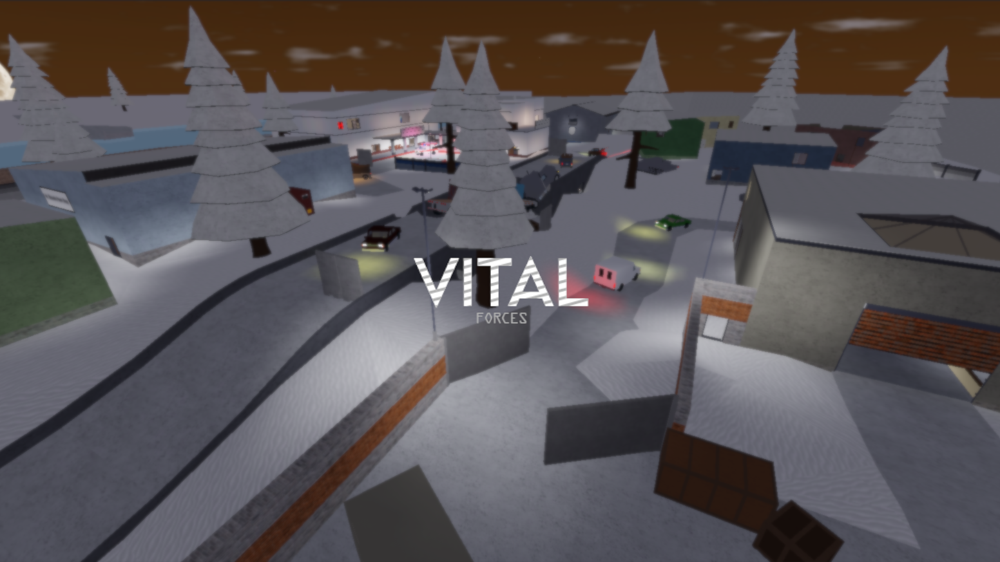

My Portfolio
Vital Forces

Vital Forces is a Roblox First Person Shooter, which is a modification of Phantom Forces, changing up the overal game feel and introducing new gamemodes such as Infection. This project started work in 2023 and is now being fully rewritten in a new framework. Link provided is an archive of the pre rewritten framework.
Game Link